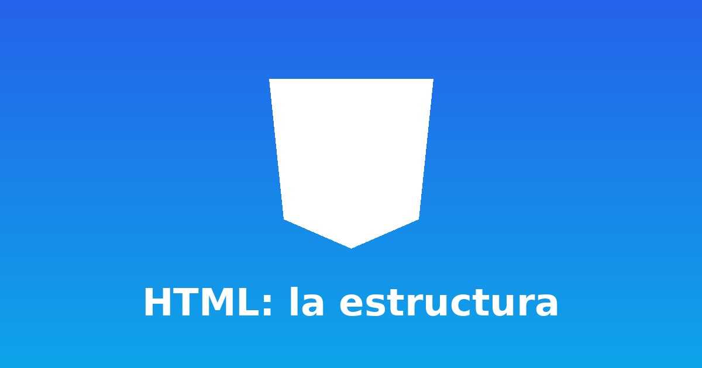

Mis primeros pasos con HTML
Publicado el 02 de noviembre de 2026

Empiezo este blog para ir dejando constancia de lo que voy aprendiendo mientras doy mis primeros pasos en el desarrollo de aplicaciones en red. Hoy le toca el turno a HTML, el lenguaje de marcado con el que se construye el esqueleto de cualquier página web.
¿Qué es HTML?
HTML (HyperText Markup Language) no es un lenguaje de programación propiamente dicho, sino de marcado: describe el contenido de una página (títulos, párrafos, imágenes, enlaces, etc.) mediante etiquetas rodeadas por los símbolos de menor y mayor que. El navegador web lee e interpreta esas etiquetas y las convierte en lo que vemos visualmente en la pantalla.
Un documento HTML básico y estándar tiene esta pinta:
<!DOCTYPE html>
<html lang="es">
<head>
<meta charset="UTF-8">
<title>Mi primera página</title>
</head>
<body>
<h1>¡Hola, mundo!</h1>
<p>Esta es mi primera página web.</p>
</body>
</html>Lo que más me ha llamado la atención
- La semántica: etiquetas como <header>, <nav>, <main> o <footer> no solo organizan el contenido de forma limpia, sino que también ayudan a los buscadores (SEO) y a las personas que usan lectores de pantalla a entender la página.
- Que un documento HTML bien estructurado es la base fundamental sobre la que luego se apoyan CSS (para darle diseño y color) y JavaScript (para añadirle comportamiento e interactividad). Sin una buena estructura HTML, todo lo demás se complica.
- Lo sencillo y potente que resulta enlazar páginas entre sí mediante la etiqueta <a> con el atributo href, que es precisamente lo que hace que un conjunto de archivos sueltos se convierta en un verdadero sitio web navegable.
Próximos pasos
En la siguiente entrada contaré cómo le he dado estilo a esta misma estructura usando CSS, y en la última hablaré de cómo JavaScript permite añadir interactividad real al usuario. ¡Vamos a por ello!

Escrito por Estudiante de DAR, que está dando sus primeros pasos en el desarrollo de aplicaciones en red.